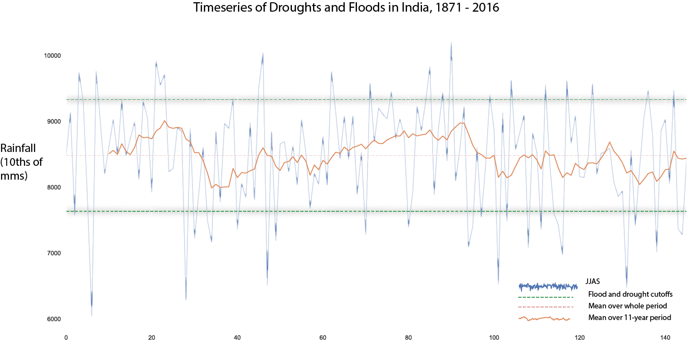

Below average July rainfall is the best predictor of drought in India
I have the script tag that points to chart-01.js inside of this partial
INDIAN MONSOON
Published October 14, 2019
I have the script tag that points to chart-01.js inside of this partial
I have the script tag that points to chart-01.js inside of this partial
I have the script tag that points to chart-01.js inside of this partial

I have the script tag that points to chart-01.js inside of this partial
Time Series of Droughts and Floods in India 1871-2016
10,000
Scientists suggest that this
drop is because of climate change
9,000
8,000
2016
1871
7,000
Increased
frequency of droughts
in recent years is dropping the
rolling average
June, July, August, Sept
Floods and drought cutoffs
Mean
6,000
11 year rolling average
Heavy rainfall later in the year often does not save the monsoon.